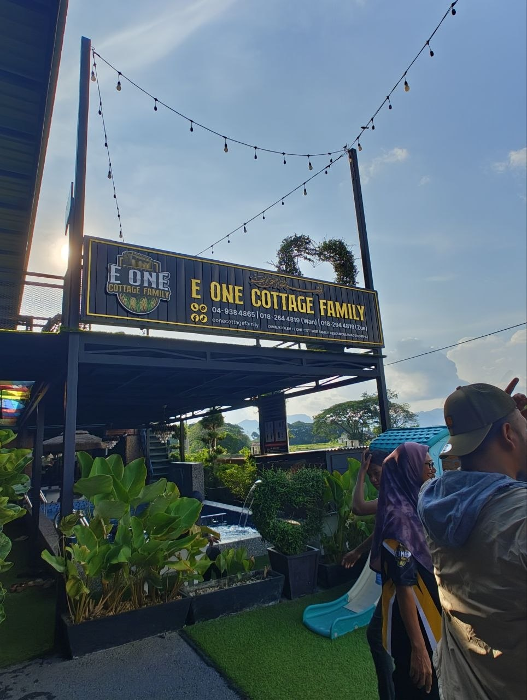

Name: Ewan
Role: Homestay Owner / Operator
Background:
Ewan is the owner of E-One Cottage Family, a homestay located in Padang Besar, Perlis.
The homestay was created to provide a comfortable and relaxing stay for families and travellers.
Contribution in Perlis:
Ewan contributes to the local tourism industry by offering affordable and family-friendly
accommodation for visitors coming to Perlis. The homestay helps promote tourism activities
in Padang Besar and supports the local economy.